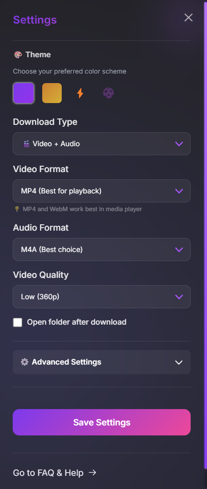
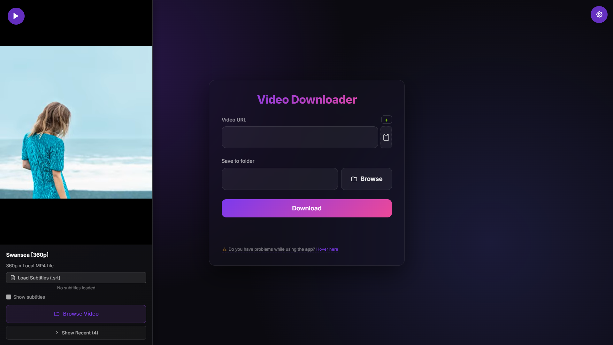
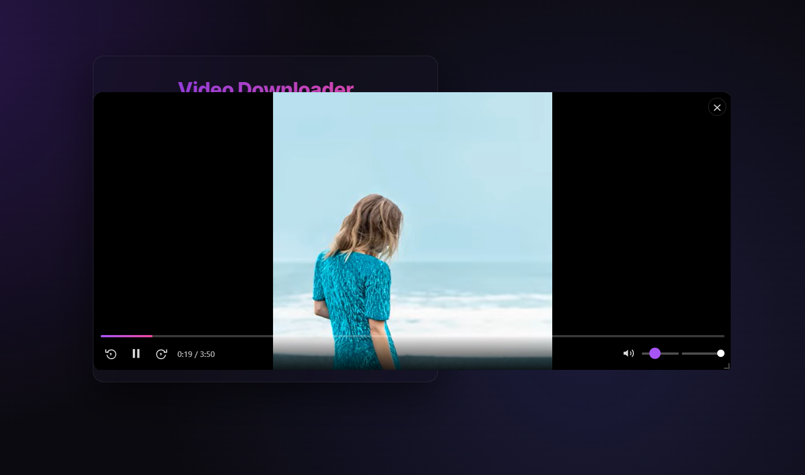
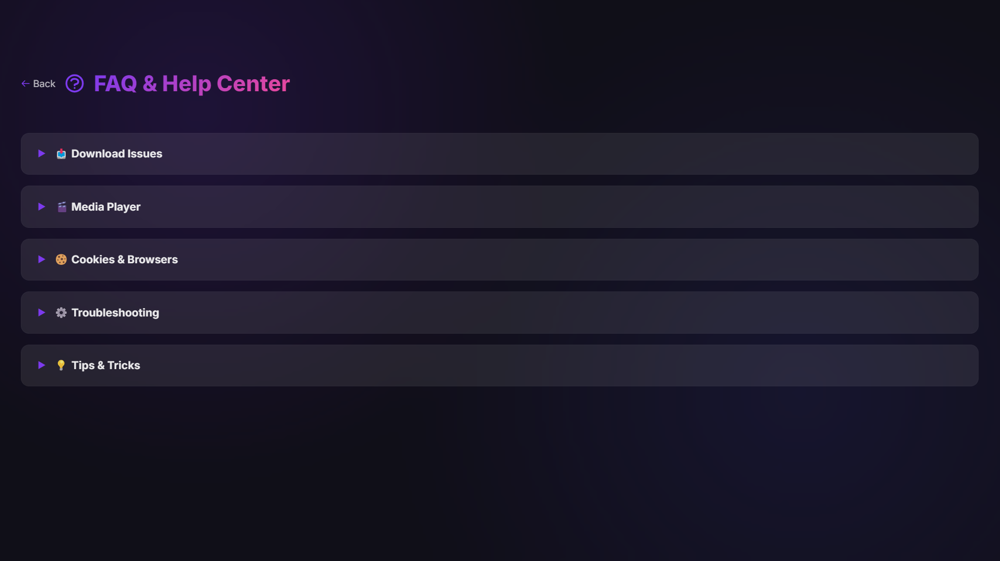
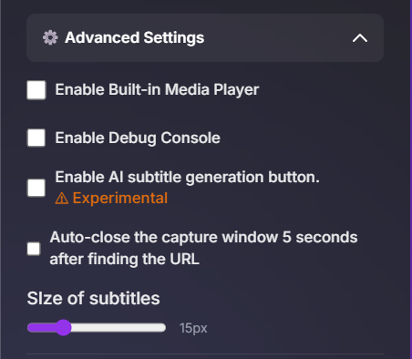

The most beautiful video downloader with built-in AI subtitles (90% accuracy) and instant summarization. YouTube • TikTok • Instagram • Facebook • 8K
YouTube, TikTok, Instagram, Facebook. Up to 8K video + audio. Experimental formats included.
Resume exactly where you left off. Custom subtitle size. Load local files too. Feels like native.
90% accurate subtitles + instant video summarization. Perfect for podcasts and lectures. Local models only.
Two experimental AI features that run completely offline after you install the models once.

Resume playback • Custom subtitles • Local files • Beautiful UI



